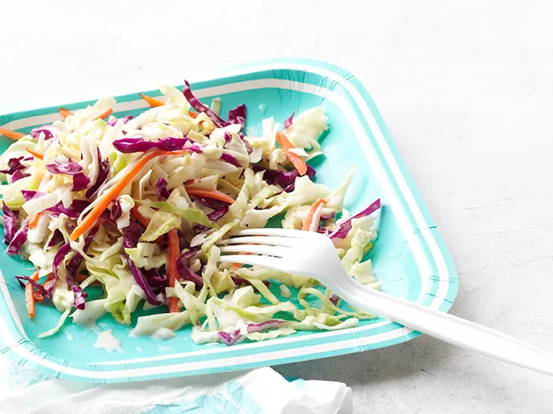

Coleslaw

Description
Amazing Coleslaw? No-Brainer!
Ingredients
- 1 (14 ounce) package coleslaw mix
- ¼ cup finely chopped yellow onion
- ½ cup mayonnaise
- ¼ cup sugar
- 2 tablespoons milk
- 2 tablespoons buttermilk
- 2 tablespoons white wine vinegar
- ½ teaspoon salt
- ⅛ teaspoon black pepper
Steps
- Stir together coleslaw mix and onion in a large bowl.
- Whisk together mayonnaise, sugar, milk, buttermilk, vinegar,
salt, and pepper in a second bowl until smooth. Pour dressing over slaw;
stir well and chill at least 2 hours or up to overnight.
This recipe was originally found here
:)
Back to recipes